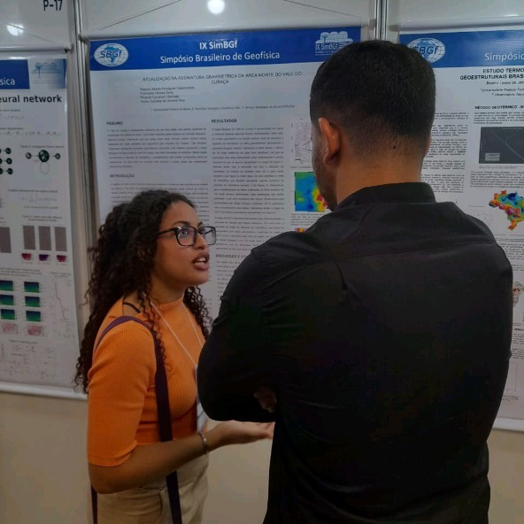

|  | Annie Gabrielle de Oliveira SilvaData de nascimento: 11/01/2000 Endereço: Salvador, Bahia, Brasil Telefone: (XX) XXXXX-XXXX Email: annie.XXXXXX@gmail.com |
Cargo: bolsista de iniciação científica
Período: set de 2021 - ago de 2022
Principal atividades: processamento de dados utilizando as linguagens python e o uso de softwares livres: OCCAM2D, QGIS.
Cargo: bolsista de iniciação científica
Período: set de 2022 - dez 2022
Principal atividades: processamento de dados utilizando as linguagens python e o uso de softwares livres: OCCAM2D, QGIS e de softwares comerciais: Oasis Montaj.
EAGE - Presencial
Carga horária: 12 horas
Conteúdo: Aquisição e processamento de dados sísmicos.
ABAS - Online
Carga horária: 12 horas
Conteúdo: conceitos de perfilagem geofísica aplicados à exploração de água subterrânea.
PROFICI
Carga horária: 510 horas
Conteúdo: Conteúdos de espanhol até o nível B1 do quadro europeu.
SBGF-presencial
Carga horária: 8 horas
Conteúdo: Teoria, aquisição e processamento do método GPR aplicado aos estudos forenses.
Udemy - Online
Carga horária: 9,5 horas
Conteúdo: estudo de redes neurais convolucionais aplicadas ao recohecimento de imagens.
Prodigyan - Online
Período: novembro 2022 - até o atual momento.
Carga horária: 624 horas
Conteúdo: No curso de Desenvolvedor Mobile o estudante irá aprender e desenvolver as melhores habilidades que compõem um profissional capacitado na área tecnológica: Algoritmo e lógica de programação, engenharia de software, fundamentos do gerenciamento de projeto, banco de dados, modelagem e implementação de bancos de dados relacionais, containerização, back-end com Node.js, microserviços e flutter.
JA Brasil - Online
Período: 25 de Maio 2023 - até o atual momento.
Conteúdo: O ElasNaTech é uma oportunidade única para formação completa em programação web feita para mulheres. O projeto é realizado pela Junior Achievement Brasil, com o patrocínio da CCR e apoio da Skillsbuild da IBM, e está em sua segunda edição. Possui conteúdo técnico de programação do zero ao avançado e busca desenvolver habilidades profissionais para conquistar novos espaços no mercado de trabalho.